library(tidyverse)
library(kableExtra)
library(ggplot2)
library(here)
library(survival)
library(KMsurv)
library(asaur)
library(survminer)10 생존함수의 추정
10.1 필요한 패키지
이 장에서는 자료를 이용하여 생존함수를 추정하는 방법에 대하여 알아본다. 생존함수를 추정하는 대표적인 두 방법은 다음과 같다.
- 생명표 방법를 이용한 생존함수 추정
- 비모수적 방법을 이용한 생존함수 추정
10.2 생명표 방법
10.2.1 생명표 개요
생명표(life table)는 특정 집단의 사망률, 생존율, 평균 수명 등을 시간에 따라 체계적으로 정리한 표로, 인구의 생존 패턴을 분석하거나 예측하기 위해 사용된다. 보통 생명표는 인구 집단이 특정 연령대에서 얼마나 오래 생존할 수 있는지를 평가하는 데 쓰이며, 각 연령대까지의 생존 확률, 즉 생존함수를 보여준다.
아래 그림은 통계청에서 작성한 한국인의 생명표로 2007,2020, 2022년의 한국인 남자와 여자의 생명표이다.
- 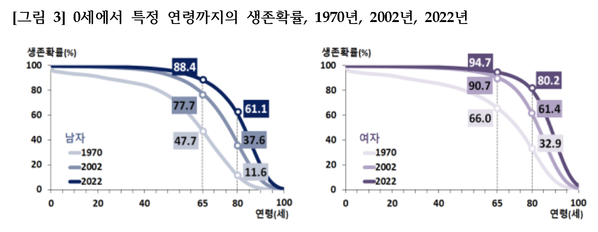
- 2007,2020, 2022년의 한국인 남자와 여자의 생명표(출처: 통계청, 2022년 생명표, 2023년 12월 1일 보도자료)
위의 한국인의 생명표를 보면 다음과 같은 사실을 알 수 있다.
모든 연령층에서 여자의 생존확률이 남자의 생존확률보다 높음.
2022년 출생아가 65세까지 생존할 확률은 남자 88.4%, 여자 94.7%임.
- 2002년 출생아가 65세까지 생존할 확률은 남자 77.7%, 여자 90.7%임.
- 2007년 출생아가 65세까지 생존할 확률은 남자 47.7%, 여자 66.0%임.
2022년 출생아가 80세까지 생존할 확률은 남자 61.1%, 여자 80.2%임.
2022년 출생아가 100세까지 생존할 확률은 남자 0.7%, 여자 3.1%임.
2007년, 2020년, 2022년의 생명표를 비교하면 한국인의 평균수명이 증가하고 있음을 알 수 있다.
10.2.2 생명표 방법을 이용한 생존함수 추정
시간 \((0, \infty)\)구간을 다음과 같은 경계선을 이용하여 \(k\) 개의 구간으로 나누었다고 가정하자. (\(t_0=0\))
\[ (0, t_1] \quad (t_1,t_2] \quad \dots \quad (t_{k-1}, t_k] \]
생존함수는 다음과 같은 조건부 확률의 축차식으로 구할 수 있다.
\[ \begin{aligned} S(t_i) & = P(T>t_i) \\ & = P(T > t_i | T > t_{i-1}) P(T > t_{i-1}) \notag \\ & = P(T > t_i | T > t_{i-1}) P(T > t_{i-1} | T > t_{i-2}) P(T > t_{i-2} ) \notag \\ & = \cdots \notag \\ & = P(T > t_i | T > t_{i-1}) P(T > t_{i-1} | T > t_{i-2}) \times \\ &\quad \dots \times P(T> t_2 | T > t_1) P(T> t_1 | T > t_0)P(T > t_0) \\ & = P(T > t_i | T > t_{i-1}) P(T > t_{i-1} | T > t_{i-2}) \times \\ & \quad \dots \times P(T> t_2 | T > t_1) P(T> t_1 ) \\ & = \prod_{k=1}^i P(T > t_k | T > t_{k-1}) \end{aligned} \tag{10.1}\]
참고로 위의 식에서 \(P(T > t_0) = P(T > 0) =1\) 이다.
이제 예를 들어 다음과 같이 5개 각 구간에서 사망자의 수 \(d_i\) 와 중도절단자의 수 \(c_i\) 가 주어졌다고 가정하자. 이 자료는 전체 115명의 환자에 대하여 5개 구간에서 사망자와 중도절단자의 수를 보여준다.
| 구간 \(I_i\) | \(i\) | 위험그룹 인원수 \(n_i\) | 사망자 수 \(d_i\) | 중도절단 수 \(c_i\) |
|---|---|---|---|---|
| \((0,t_1]\) | 1 | 115 | 47 | 19 |
| \((t_1,t_2]\) | 2 | 49 | 5 | 17 |
| \((t_2,t_3]\) | 3 | 27 | 2 | 15 |
| \((t_3,t_4]\) | 4 | 10 | 2 | 2 |
| \((t_4,t_5]\) | 5 | 6 | 0 | 6 |
위의 표에서 \(i\) 번째 구간의 위험그룹 인원수 \(n_i\) 는 다음과 같이 주어진다.
\[ n_i = n_{i-1} - d_{i-1} -c_{i-1} \]
위험그룹 인원수(number at risk) \(n_{i}\) 은 \(i\)번째 구간의 시작 시점까지 살아있는 사람의 수이다. 이는 바로 전 구간의 위험 그룹 인원수 \(n_{i-1}\) 에서 사망한 사람의 수 \(d_{i-1}\) 와 중도절단된 사람의 수 \(c_{i-1}\) 를 뺀 값이다. 분석에 처음으로 고려되는 전체 집단의 수를 \(n\) 이라고 하면 \(n_0 = n\) 이다.
조건부 생존 확률 \(P(T > t_{i} | T > t_{i-1})\) 는 다음과 같이 추정할 수 있다. 이는 \(i\)번째 구간을 시작할 때 살아있는 사람들(위험 그룹)을 고려했을 때, \(i\) 번째 구간에서 사망한 사람의 비율 \(d_i/n^{'}_{i}\) 을 1에서 뺀 확률이다.
\[ \begin{aligned} P(T > t_{i} | T > t_{i-1}) & = 1- P(T \le t_{i} | T > t_{i-1}) \\ & = 1 -\frac{d_i}{n'_i} \end{aligned} \tag{10.2}\]
위의 10.2 의 계산에서 위험그룹 인원수(number at risk) \(n_{i}\) 대신 보정된 위험그룹 인원수(corrected number at risk) 또는 유효인원수(effective sample size) \(n'_i\) 를 사용하였으며 다음과 같이 계산한다.
\[ n'_i = n_i - \frac{c_i}{2} \]
보정된 위험그룹 인원수(유효인원수) \(n'_i\) 는 중도절단된 사람이 실제로 사망한 시점을 모르기 때문에 위험그룹 인원수 를 보정한 값(corrected value)이다. 중도절단된 사람이 사망한 시점을 모르기 때문에 중도절단된 사람의 수를 반으로 줄여서 보정된 위험그룹 인원수를 계산한다.
조건부 생존 함수 10.2 를 계산하는 예를 들어보자. 일단 첫 번째 \(i=1\) 인 경우를 살펴보자.
\[ \begin{aligned} P(T > t_{1} | T > t_{0}) & = 1- P(T \le t_{1} | T > 0) \\ & = 1- P(T \le t_{1} ) \\ & = 1 -\frac{d_1}{n'_1} \\ & = 1 -\frac{47}{115-19/2} \\ & = 1 -\frac{47}{105.5} \\ & = 1 - 0.4455 \\ & = 0.5545 \end{aligned} \]
다음으로 세 번째 구간 (\(i=3\)) 인 경우를 살펴보자.
\[ \begin{aligned} P(T > t_{3} | T > t_{2}) & = 1- P(T \le t_{3} | T > t_{2}) \\ & = 1 -\frac{d_3}{n'_3} \\ & = 1 -\frac{2}{27-17/2} \\ & = 1 -\frac{2}{19.5} \\ & = 1 - 0.1026 \\ & = 0.8974 \end{aligned} \]
생존함수의 추정은 조건부 확률의 축차식 10.1 과 조건부 생존 확률 10.2 을 이용하여 다음과 같이 계산할 수 있다.
\[ \hat S(t_i) = \prod_{k=1}^i \left ( 1-\tfrac{d_k}{n'_k} \right ) \]
예를 들어 위의 예제에서 생존함수 \(S(t_3) = P(T > t_3)\) 의 추정은 다음과 같이 계산할 수 있다. 참고로 \(S(t_0) = 1\) 이다.
\[ \begin{aligned} \hat S(t_3) & = P(T > t_3 | T > t_2) P(T > 2 | T > t_1) P(T > t_1 | T > t_0 ) \\ & = \prod_{k=1}^3 P(T > t_k | T > t_{k-1}) \\ & = \prod_{k=1}^3 \left ( 1-\tfrac{d_k}{n'_k} \right ) \\ & = \left ( 1-\tfrac{d_1}{n'_1} \right ) \times \left ( 1-\tfrac{d_2}{n'_2} \right ) \times \left ( 1-\tfrac{d_3}{n'_3} \right ) \\ & = 0.5545 \times 0.8765 \times 0.8974 \\ & = 0.4860 \end{aligned} \]
생명표방법을 이용한 생존함수 추정은 표를 이용하면 편리하다. 다음은 위에서 고려한 예제 표에 대하여 각 구간에서 사망자수와 중도절단수가 주어진 경우 생명표방법을 이용하여 생존함수를 추정하는 예를 보여준다.
| 구간 | \(i\) | \(n_i\) | \(d_i\) | \(c_i\) | \(n'_i\) | \(d_i/n'_i\) | \(1-d_i/n'_i\) | \(\hat S(t_{i-1})\) |
|---|---|---|---|---|---|---|---|---|
| \((0,t_1]\) | 1 | 115 | 47 | 19 | 105.5 | 0.4455 | 0.5545 | 1.000 |
| \((t_1,t_2]\) | 2 | 49 | 5 | 17 | 40.5 | 0.1235 | 0.8765 | 0.5545 |
| \((t_2,t_3]\) | 3 | 27 | 2 | 15 | 19.5 | 0.1026 | 0.8974 | 0.4860 |
| \((t_3,t_4]\) | 4 | 10 | 2 | 2 | 9.0 | 0.2222 | 0.7778 | 0.4362 |
| \((t_4,t_5]\) | 5 | 6 | 0 | 6 | 3.0 | 0.0000 | 1.00 | 0.3393 |
주의
위의 생명표 계산표 10.1 에서 각 구간에 대한 생존함수 추정은 구간의 시작점에 대한 생존함수 추정값이다. 즉 \(i\) 번째 구간 \((t_{i-1}, t_{i}]\) 에 대한 생존함수 추정값은 \(t_{i-1}\) 에 대한 생존함수 \(S(t_{i-1}) = P(T > t_{i-1})\) 의 추정값이다.
생명표 방법에서 각 구간의 중간 시점에 대한 위험함수(hazard function)을 다음과 같이 추정할 수 있다.
\[ \hat h(t_{im}) = \frac{d_i}{b_i(n'_i - d_i/2)}, \text{ where } \quad t_{im} = \frac{t_{i-1} + t_i}{2} \tag{10.3}\]
식 10.3 에서 \(b_i = t_i - t_{i-1}\) 는 \(i\) 번째 구간의 길이이다.
예를 들어, 구간의 길이가 \(b_2=1\) 이라면, 두 번째 구간의 중간 시점에서 위험함수 \(h(t_{2m})\) 의 추정은 다음과 같이 계산할 수 있다.
\[ \hat h(t_{2m}) = \frac{d_2}{b_2(n'_2 - d_2/2)} = \frac{5}{(1)(40.5 - 5/2)} = 0.1316 \]
참고로 추정된 생존함수의 분산은 다음과 같은 그린우드의 공식(Greenwood’s formula)으로 구할 수 있다.
\[ \widehat {Var} (\hat S (t_i) ) = [\hat S(t_i)]^2 \sum_{k=1}^i \frac{d_k}{ n_k^{'} ( n_k^{'} -d_k)} \]
R 에서는 패키지 KMsurv 의 함수 lifeTable() 를 이용하면 생명표방법을 이용한 생존함수 추정을 할 수 있다. 함수 lifeTable() 의 각 인자들은 다음과 같이 정의된다.
tis: 구간의 끝점 벡터로, 길이가nlost및nevent보다 개수가 1개 많은 백터ninit: 처음에 연구에 참여한 전체 집단의 수nlost: 각 구간에 대한 중도절단된 사람의 수를 나타내는 벡터nevent: 각 구간에 대한 사건의 수(number of events)를 나타내는 벡터
위의 표에 나타난 자료를 이용하여 생명표방법을 이용한 생존함수 추정값을 구해보자.
death1 <- c(47, 5, 2, 2, 0)
censor1 <- c(19, 17, 15, 2, 6)
intEndpts <- 0:(length(death1))
N <- sum(censor1) + sum(death1)
lfres0 <- lifetab(tis = intEndpts, ninit=N, nlost=censor1, nevent=death1)
lfres0[c("nsubs", "nevent", "nlost", "nrisk", "hazard", "surv","se.surv")] nsubs nevent nlost nrisk hazard surv se.surv
0-1 115 47 19 105.5 0.5731707 1.0000000 0.00000000
1-2 49 5 17 40.5 0.1315789 0.5545024 0.04838917
2-3 27 2 15 19.5 0.1081081 0.4860453 0.05119190
3-4 10 2 2 9.0 0.2500000 0.4361945 0.05679548
4-5 6 0 6 3.0 NA 0.3392624 0.07486856함수 lifetab() 의 결과를 이용하여 패키지 survminer 의 함수 ggsurvplot() 을 이용하여 생존함수를 그래프로 그릴 수 있다.
intTime <- 0:(dim(lfres0)[1]-1) # 구간의 시작점
plot(intTime, lfres0$surv, type = "s", xlab = "Time", ylab = "Survival Probability", main = "Survival Curve")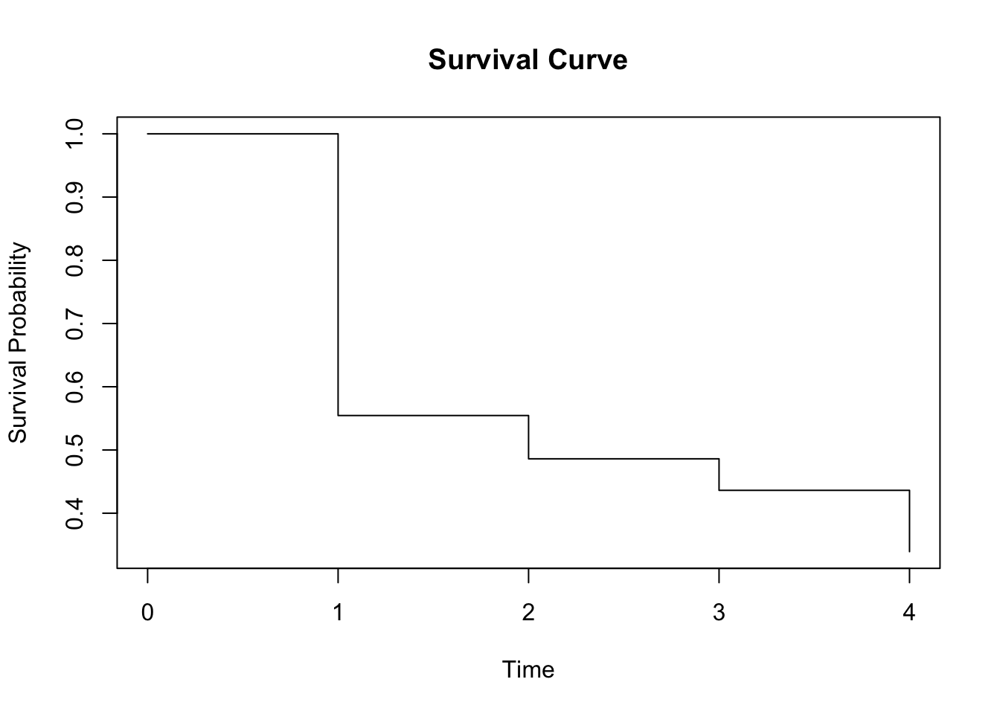
Jaewon Lee (2005) 의 예제 7-1 에 나타난 자료를 이용하여 생명표방법을 이용한 생존함수 추정값을 구해보자.
death2 <- c(456, 226, 152, 171, 135, 125, 83, 74, 51, 42, 43, 34, 18, 9, 6, 0)
censor2 <- c(0, 39, 22, 23, 24, 107, 133, 102, 68, 64, 45, 53, 33, 27, 23, 30)
intEndpts = 0:(length(death2))
N <- sum(censor2) + sum(death2)
lfres71 <- lifetab(tis = intEndpts, ninit=N, nlost=censor2, nevent=death2)
lfres71[c("nsubs", "nevent", "nlost", "nrisk", "hazard", "surv","se.surv")] nsubs nevent nlost nrisk hazard surv se.surv
0-1 2418 456 0 2418.0 0.20821918 1.0000000 0.000000000
1-2 1962 226 39 1942.5 0.12353102 0.8114144 0.007955134
2-3 1697 152 22 1686.0 0.09440994 0.7170105 0.009179397
3-4 1523 171 23 1511.5 0.11991585 0.6523689 0.009734736
4-5 1329 135 24 1317.0 0.10804322 0.5785647 0.010138361
5-6 1170 125 107 1116.5 0.11859583 0.5192585 0.010304216
6-7 938 83 133 871.5 0.10000000 0.4611239 0.010379949
7-8 722 74 102 671.0 0.11671924 0.4172073 0.010450930
8-9 546 51 68 512.0 0.10483042 0.3711964 0.010578887
9-10 427 42 64 395.0 0.11229947 0.3342218 0.010717477
10-11 321 43 45 298.5 0.15523466 0.2986843 0.010890741
11-12 233 34 53 206.5 0.17941953 0.2556577 0.011124244
12-13 146 18 33 129.5 0.14937759 0.2135639 0.011396799
13-14 95 9 27 81.5 0.11688312 0.1838794 0.011765989
14-15 59 6 23 47.5 0.13483146 0.1635737 0.012259921
15-16 30 0 30 15.0 NA 0.1429117 0.013300258intTime <- 0:(dim(lfres71)[1]-1) # 구간의 시작점
plot(intTime, lfres71$surv, type = "s", xlab = "Time", ylab = "Survival Probability", main = "Survival Curve")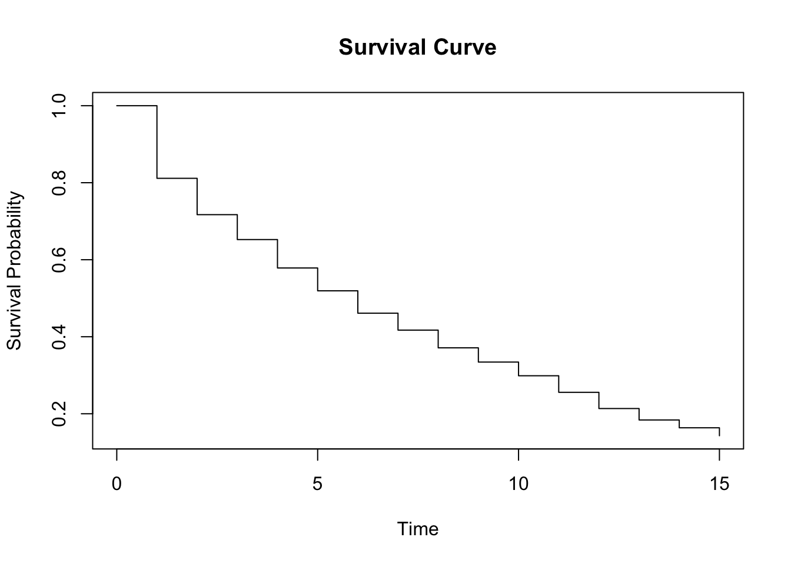
10.3 비모수적 방법
의학연구에서는 사람이나 동물을 대상으로 연구를 진행하는데 이러한 경우 실험 대상자의 수도 많지 않으며 생존함수가 어떤 분포를 따르는지 미리 알기 힘들다. 앞에서 살펴본 생명표방법은 각 구간에서 사망자수와 중도절단수가 주어진 경우 생존함수를 추정하는 방법이므로 실험대상자의 수가 많지 않은 경우에는 적용하기 어렵다.
따라서 생존함수를 추정할 때 비모수적 방법(nonparametric methods)를 이용한다. 비모수적 방법에서는 생명표방법에서 고려한 생존함수를 축차적인 조건부 확률의 곱으로 나타내는 공식 10.1 을 이용하는 것은 동일하지만 구간을 나누는 방법이 다르다.
10.3.1 누적한계추정량
비모수적 방법으로 생존함수를 추정하는 경우 시간에 따른 생존함수의 변화가 각 관측점에서 일어나게 된다. 즉, 구간을 나누는 값이 자료의 값이 되며, 이러한 방법을 비모수적 방법이라고 한다.
표본에서 관측된 생존시간들 을 순서대로 \(t_1 < t_2 < \dots < t_n\) 나열한 다음 누적한계추정법(product limit estimator; Kaplan-Meier estimator)은 생존함수를 다음의 식으로 추정한다.
\[ \hat S(t) = \prod_{t_i \le t} \left ( 1-\frac{d_i}{n_i} \right)^{\delta_i} = \prod_{t_i \le t} \left ( \frac{n_i-d_k}{n_i} \right)^{\delta_i} \tag{10.4}\]
- \(n_i\) : 시간 \(t_i\) 바로 직전까지 중도절단되지 않고 생존한 사람의 수 (위험집단의 수; number at risk)
- \(d_i\) : 시간 \(t_i\) 에 사망한 사람의 수
- \(\delta_i\) : 중도절단를 나타내는 지시변수로, \(\delta_i = 1\) 이면 실제 사건이 일어난 것이고, \(\delta_i = 0\) 이면 중도절단을 나타낸다.
주의
누적한계추정법에서 구간을 구성하는 시점은 실제 사건이 일어난 시점만 고려한다. 중도절단된 자료만 발생한 시점은 구간을 구성하는 시점으로 고려하지 않는다.
다음 주어진 12명에 대한 생존자료에 대하여 누적한계추정법으로 생존함수를 추정하는 방법을 알아보자. \(+\)는 중도절단된 자료를 표시한다.
\[ 9,~~13,~~13+,~~18,~~23~~,28+,~~31,~~31,~~31+~~,45+,~~48,~~161+ \] 위의 자료에서 실제로 사건이 일어난 시점만 고려하여 구간을 만들면 다음과 같다.
\[ (0,9] ,~~ (9,13] ,~~ (13,18] ,~~ (18,23] ,~~ (23,31] ,~~ (31,48] ,~~ (48,\infty) \] 이제 위에서 구한 구간에 대하여 생존함수를 추정해보자.
| 구간 | \(t\) | \(n_i\) | \(d_i\) | \(d_i/n_i\) | \(1-d_i/n_i\) | \(\hat S(t)\) |
|---|---|---|---|---|---|---|
| \((0,9]\) | \(0\) | \(12\) | \(0\) | \(0/12\) | \(1-0/12\) | \(1.000\) |
| \((9, 13]\) | \(9\) | \(12\) | \(1\) | \(1/12\) | \(1-1/12\) | \(0.917\) |
| \((13,18]\) | \(13\) | \(11\) | \(1\) | \(1/11\) | \(1-1/11\) | \(0.833\) |
| \((18,23]\) | \(18\) | \(9\) | \(1\) | \(1/9\) | \(1-1/9\) | \(0.741\) |
| \((23,31]\) | \(23\) | \(8\) | \(1\) | \(1/8\) | \(1-1/8\) | \(0.648\) |
| \((31,48]\) | \(31\) | \(6\) | \(2\) | \(2/6\) | \(1-2/6\) | \(0.432\) |
| \((48,\infty]\) | \(48\) | \(2\) | \(1\) | \(1/2\) | \(1-1/2\) | \(0.216\) |
누적한계추정법은 생존함수를 다음과 같이 축차적으로 구할 수 있다.
\[ \begin{aligned} \hat S(0) & = 1 \\ \hat S(9) & = \hat S(0) \times \left [ 1- \frac{1}{12} \right ] = 0.917 \\ \hat S(13) & = \hat S(9) \times \left [ 1-\frac{1}{11} \right ]= 0.833 \\ \hat S(18) & = \hat S(13) \times \left [ 1-\frac{1}{9} \right ]= 0.741 \\ \hat S(23) & = \hat S(18) \times \left [ 1-\frac{1}{8} \right ]= 0.648 \\ \hat S(31) & = \hat S(23) \times \left [ 1-\frac{2}{6} \right ]= 0.432 \\ \hat S(48) & = \hat S(31) \times \left [ 1-\frac{1}{2} \right ]= 0.216 \end{aligned} \]
생존함수 추정량 \(\hat S(t)\) 의 분산은 다음과 같이 주어진다.
\[ Var(\hat S(t)) = [\hat S(t)]^2 \sum_{t_i \le t} \frac{d_i}{n_i(n_i-d_i)} \]
위의 분산추정량으로 생존함수의 신뢰구간을 구하면 [0,1]의 범위를 벗어나는 경우가 생긴다. 이러한 단점을 보완하기 위하여 생존함수의 변환(log-log transformation)을 이용한 신뢰구간을 구하는 방법을 주로 사용한다.
\[ Var\left ( \log \left [ - \log \hat S(t) \right ] \right ) \approx \frac{1}{[\hat S(t)]^2 } \sum_{t_i \le t} \frac{d_i}{n_i(n_i-d_i)} \]
다음은 예제 자료에 대하여 누적한계추정법으로 생존함수를 추정하는 R 프로그램이다.
t <- c(9, 13, 13, 18 ,23 ,28, 31, 31,31,45 ,48 ,161)
cens <- c(1,1,0,1,1,0,1,1,0,0,1,0)
df <- Surv(t, cens)
df [1] 9 13 13+ 18 23 28+ 31 31 31+ 45+ 48 161+res.km <- survfit(Surv(t, cens)~1, conf.type="log-log")
res.kmCall: survfit(formula = Surv(t, cens) ~ 1, conf.type = "log-log")
n events median 0.95LCL 0.95UCL
[1,] 12 7 31 13 NAsummary(res.km)Call: survfit(formula = Surv(t, cens) ~ 1, conf.type = "log-log")
time n.risk n.event survival std.err lower 95% CI upper 95% CI
9 12 1 0.917 0.0798 0.5390 0.988
13 11 1 0.833 0.1076 0.4817 0.956
18 9 1 0.741 0.1295 0.3907 0.909
23 8 1 0.648 0.1426 0.3097 0.852
31 6 2 0.432 0.1568 0.1410 0.698
48 2 1 0.216 0.1717 0.0145 0.574plot(res.km)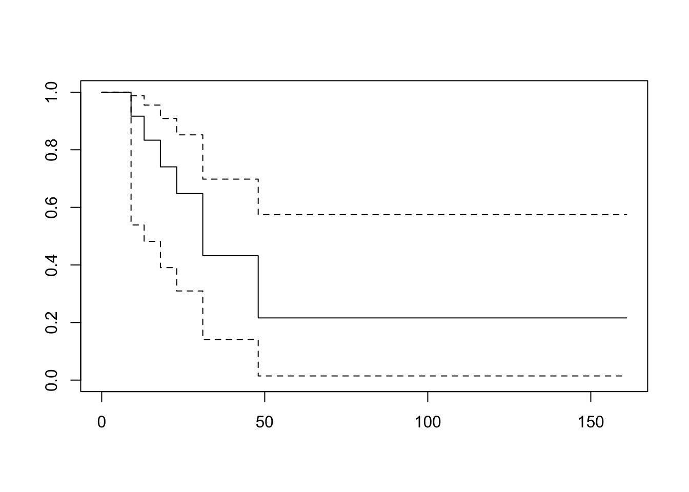
10.3.2 Nelson-Aalen 추정량
Nelson-Aalen 추정량은 생존함수와 위험함수의 관계를 이용하는 추정량이다. 누적 위험함수 \(H(t)\) 는 시간 \(t\)까지 위험함수의 합이므로 다음과 같이 추정할 수 있다.
\[ \hat H(t) = \sum_{t_i \le t} \frac{d_i}{n_i} \]
따라서 생존함수과의 관계를 이용하면 Nelson-Aalen 추정량은 다음과 같이 주어진다.
\[ \hat S(t) = e^{- \hat H(t)} \tag{10.5}\]
위에서 고려한 동일한 12명에 대한 생존자료에 대하여 Nelson-Aalen 추정법으로 생존함수를 추정하는 방법을 알아보자. \(+\)는 중도절단된 자료를 표시한다.
\[ 9,~~13,~~13+,~~18,~~23~~,28+,~~31,~~31,~~31+~~,45+,~~48,~~161+ \]
이제 누적한계추정법과 동일한 방법으로 구간을 설정하고 10.5 에 주어진 추정식으로 다음과 같은 표를 만들어 생존함수를 추정할 수 있다.
| 구간 | \(t\) | \(n_i\) | \(d_i\) | \(d_i/n_i\) | \(\sum_{t_i \le t} d_i/n_i\) | \(\hat S(t)\) |
|---|---|---|---|---|---|---|
| \((0,9]\) | \(0\) | \(12\) | \(0\) | \(0/12\) | \(0.0000\) | \(1.00\) |
| \((9, 13]\) | \(9\) | \(12\) | \(1\) | \(1/12\) | \(0.0833\) | \(0.920\) |
| \((13,18]\) | \(13\) | \(11\) | \(1\) | \(1/11\) | \(0.1742\) | \(0.840\) |
| \((18,23]\) | \(18\) | \(9\) | \(1\) | \(1/9\) | \(0.2853\) | \(0.752\) |
| \((23,31]\) | \(23\) | \(8\) | \(1\) | \(1/8\) | \(0.4104\) | \(0.663\) |
| \((31,48]\) | \(31\) | \(6\) | \(2\) | \(2/6\) | \(0.7437\) | \(0.475\) |
| \((48,\infty]\) | \(48\) | \(2\) | \(1\) | \(1/2\) | \(1.2439\) | \(0.288\) |
아래는 예제 자료에 대하여 Nelson-Aalen 추정량(type="fh")으로 생존함수를 추정하는 R 프로그램이다.
t <- c(9, 13, 13, 18 ,23 ,28, 31, 31,31,45 ,48 ,161)
cens <- c(1,1,0,1,1,0,1,1,0,0,1,0)
res.fh <- survfit(Surv(t, cens)~1, conf.type="log-log", type="fh")
res.fhCall: survfit(formula = Surv(t, cens) ~ 1, conf.type = "log-log", type = "fh")
n events median 0.95LCL 0.95UCL
[1,] 12 7 31 13 NAsummary(res.fh)Call: survfit(formula = Surv(t, cens) ~ 1, conf.type = "log-log", type = "fh")
time n.risk n.event survival std.err lower 95% CI upper 95% CI
9 12 1 0.920 0.0767 0.5534 0.988
13 11 1 0.840 0.1036 0.4978 0.957
18 9 1 0.752 0.1248 0.4097 0.913
23 8 1 0.663 0.1379 0.3305 0.859
31 6 2 0.460 0.1532 0.1653 0.715
48 2 1 0.279 0.1675 0.0403 0.602plot(res.fh)누적한계추정법과 Nelson-Aalen 추정법으로 구한 생존함수의 추정치를 비교해보면 매우 유사하다.
compsurv <- data.frame(time = res.km$time, estKM = res.km$surv, estNA = res.fh$surv)
compsurv time estKM estNA
1 9 0.9166667 0.9200444
2 13 0.8333333 0.8400932
3 18 0.7407407 0.7517484
4 23 0.6481481 0.6634157
5 28 0.6481481 0.6634157
6 31 0.4320988 0.4597740
7 45 0.4320988 0.4597740
8 48 0.2160494 0.2788670
9 161 0.2160494 0.2788670plot(res.fh, col ="blue")
lines(res.km, col = "red")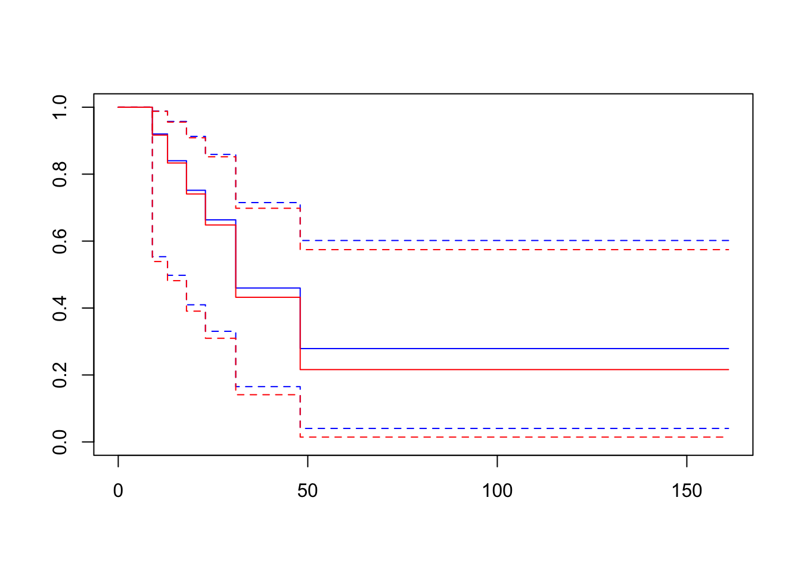
중위 생존시간
중위 생존시간의 추정량은 \(\hat t_{med}\) 다음 방정식을 만족하는 \(t\)의 값이다.
\[ \hat t_{med} = \inf ~ \{t~|~ \hat S(t) \le 1/2 \} \]
res.kmCall: survfit(formula = Surv(t, cens) ~ 1, conf.type = "log-log")
n events median 0.95LCL 0.95UCL
[1,] 12 7 31 13 NA\(\blacksquare\)
10.4 생존함수 추정의 예제
10.4.1 예제 1
참고도서 Jaewon Lee (2005) 의 예제 7-2 에 나온 자료에 대하여 누적한계추정법으로 구한 생존함수의 추정결과는 다음과 같다.
t <- c(3, 4, 4.5, 5.5, 6.0, 6.4, 6.5, 7.0, 7.5, 8.4, 10, 10, 12, 15)
cens <- c(1, 0, 1, 1, 1, 1, 1, 1, 1, 0, 1, 0, 1, 1)
Surv(t, cens) [1] 3.0 4.0+ 4.5 5.5 6.0 6.4 6.5 7.0 7.5 8.4+ 10.0 10.0+
[13] 12.0 15.0 res.km72 <- survfit(Surv(t, cens)~1, conf.type="log-log")
summary(res.km72)Call: survfit(formula = Surv(t, cens) ~ 1, conf.type = "log-log")
time n.risk n.event survival std.err lower 95% CI upper 95% CI
3.0 14 1 0.929 0.0688 0.5908 0.990
4.5 12 1 0.851 0.0973 0.5234 0.961
5.5 11 1 0.774 0.1152 0.4493 0.921
6.0 10 1 0.696 0.1270 0.3784 0.874
6.4 9 1 0.619 0.1344 0.3119 0.821
6.5 8 1 0.542 0.1381 0.2502 0.762
7.0 7 1 0.464 0.1384 0.1934 0.699
7.5 6 1 0.387 0.1352 0.1418 0.630
10.0 4 1 0.290 0.1315 0.0791 0.547
12.0 2 1 0.145 0.1219 0.0108 0.439
15.0 1 1 0.000 NaN NA NAplot(res.km72, mark="|", ylab="survival function", xlab="Time")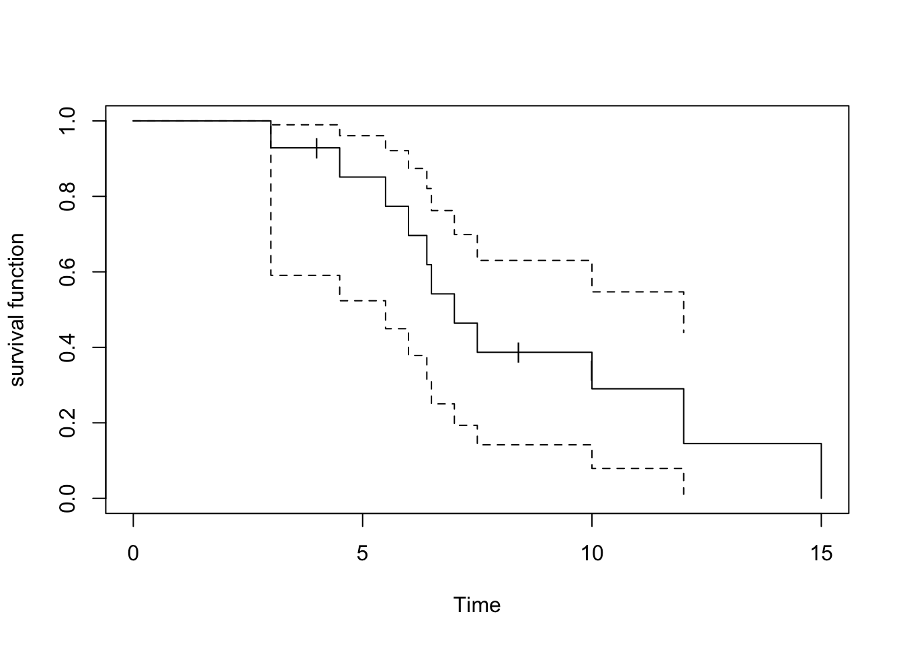
다음은 누적한계추정법으로 구한 누적위험함수 \(H(t)\) 이다.
plot(res.km72, cumhaz=TRUE, mark="|", ylab="cumulative hazrd")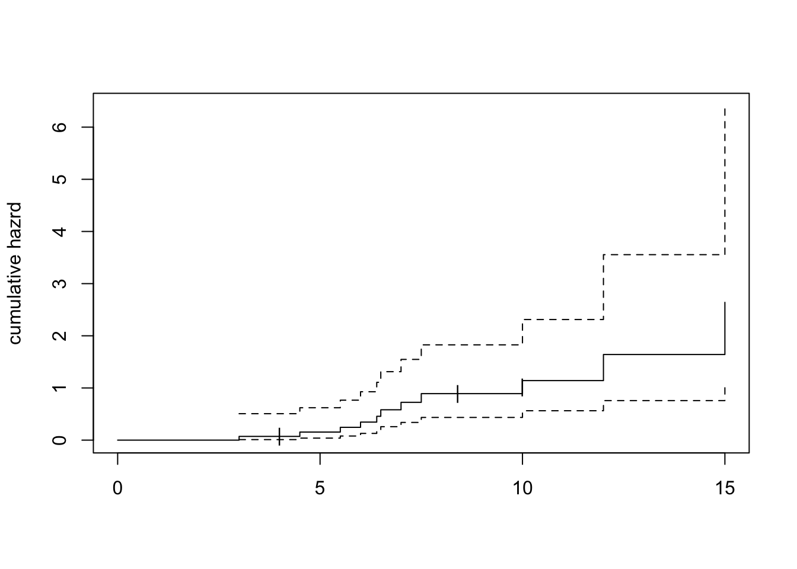
다음은 survminer 패키지의 ggsurvplot() 함수를 이용하여 생존함수와 누적위험함수를 그래프로 그린 결과이다.
t <- c(3, 4, 4.5, 5.5, 6.0, 6.4, 6.5, 7.0, 7.5, 8.4, 10, 10, 12, 15)
cens <- c(1, 0, 1, 1, 1, 1, 1, 1, 1, 0, 1, 0, 1, 1)
example1 <- data.frame(t = t, cens = cens)
res.km721 <- survfit(Surv(t, cens)~1, data=example1, conf.type="log-log")
ggsurvplot(res.km721, data=example1, risk.table = TRUE, risk.table.height = 0.25, ggtheme = theme_bw())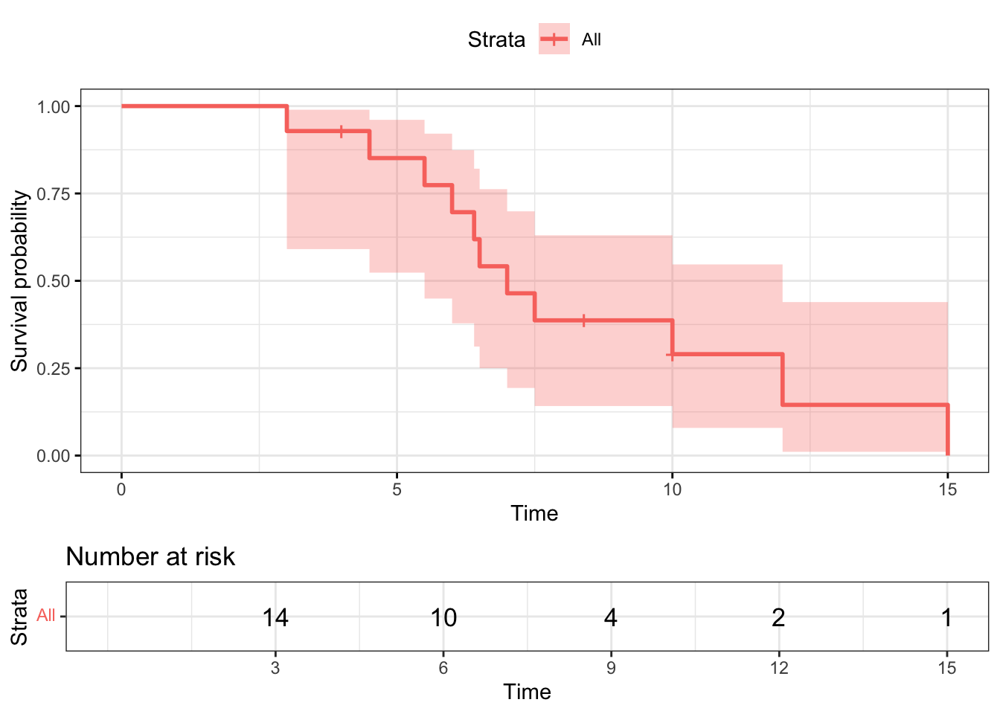
ggsurvplot(res.km721, data=example1, fun = "cumhaz")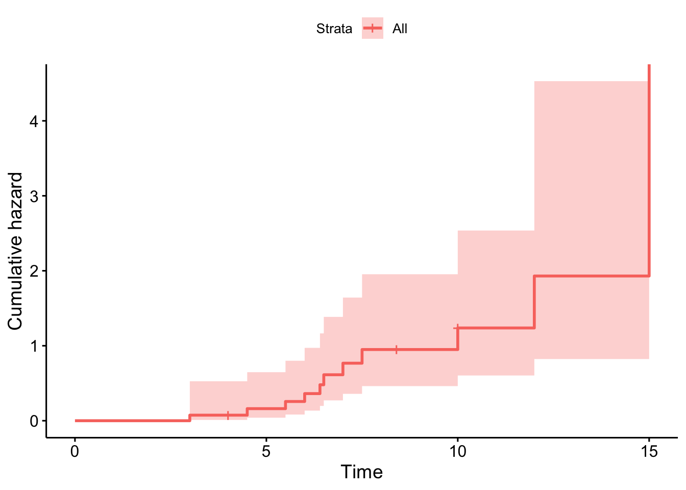
10.4.2 예제 2
참고도서 Moore (2016) 의 29페이지에 나오는 예제를 소개한다. 위암환자들에게 치료제인 Xelox를 투약하는 실제 2상 임상실험의 자료를 분석한 예이다. 관심있는 변수는 “progression-free time” 으로서 임상실험에 참가한 시점부터 회복이 되거나 사망하거나 둘 중에 빠르게 나타난 시간이다.
아래는 누적한계추정법으로 구한 생존함수의 추정치와 그림(생존함수와 누적위험함수)이다.
example2 <- gastricXelox %>%
dplyr::mutate(timeMonths = timeWeeks*7/30.25) # convert weeks to months
Surv(example2$timeMonths, example2$delta) [1] 0.9256198 1.8512397 1.8512397 1.8512397 2.0826446 2.5454545
[7] 2.7768595 3.0082645 3.7024793 3.7024793 3.9338843 3.9338843
[13] 4.3966942 4.8595041 5.5537190 5.5537190 5.7851240 6.4793388
[19] 6.4793388 6.9421488 8.5619835 8.5619835 9.7190083 9.9504132
[25] 9.9504132+ 10.6446281 11.1074380+ 11.5702479+ 11.8016529+ 12.2644628
[31] 12.4958678+ 13.1900826+ 13.6528926+ 13.6528926 13.8842975 14.8099174
[37] 15.2727273 17.5867769 18.0495868 21.0578512+ 27.5371901+ 27.7685950+
[43] 32.1652893+ 40.7272727+ 43.2727273+ 46.9752066+ 50.2148760+ 58.5454545+result.km <- survfit(Surv(timeMonths, delta) ~ 1, conf.type="log-log", data=example2)
# median survival and 95% confidence interval is printed as follows:
result.kmCall: survfit(formula = Surv(timeMonths, delta) ~ 1, data = example2,
conf.type = "log-log")
n events median 0.95LCL 0.95UCL
[1,] 48 32 10.3 5.79 15.3plot(result.km, mark="|", ylab="Survival probability", xlab="Time in months",
cex.axis=1.5, cex.lab=1.5, lwd=1.5)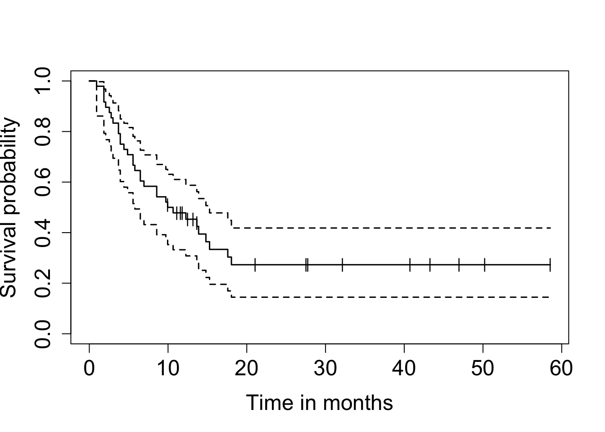
plot(result.km, cumhaz=TRUE, mark="|", ylab="cumulative hazrd", xlab="Time in months", cex.axis=1.5, cex.lab=1.5, lwd=1.5)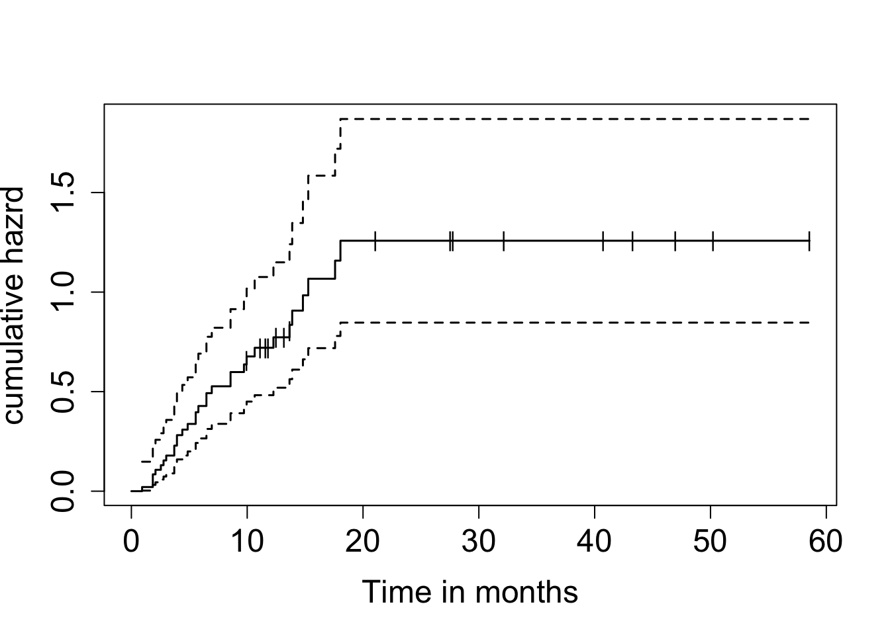
다음은 survminer 패키지의 ggsurvplot() 함수를 이용하여 생존함수와 누적위험함수를 그래프로 그린 결과이다.
ggsurvplot(result.km, data = example2, risk.table = TRUE, risk.table.height = 0.25, ggtheme = theme_bw())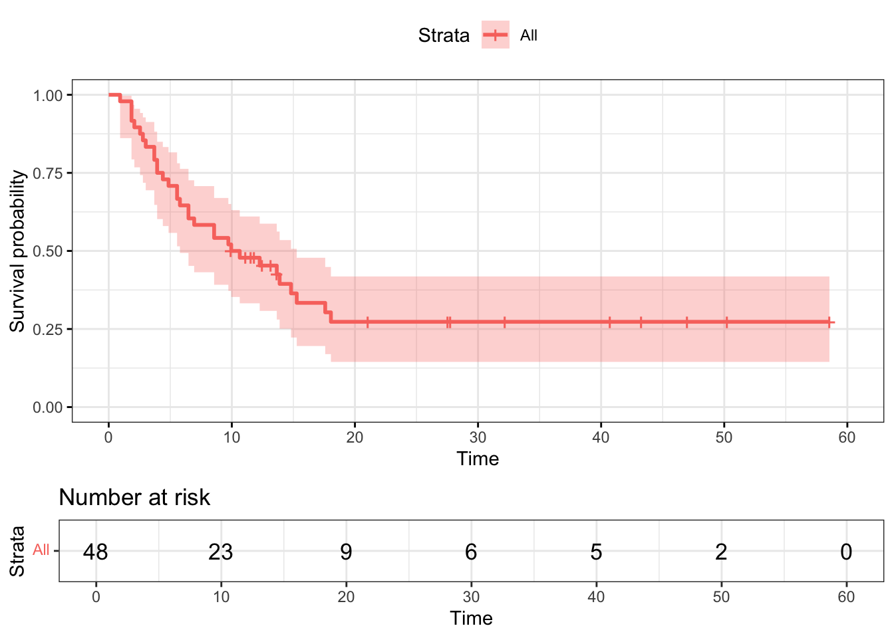
ggsurvplot(result.km, data = example2, fun = "cumhaz")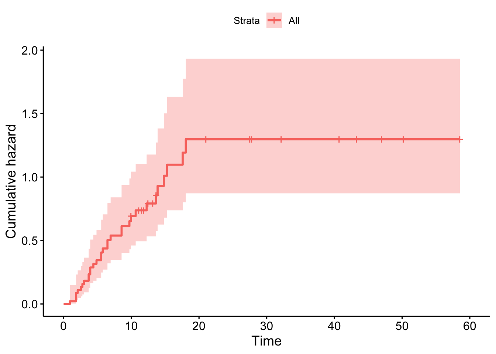